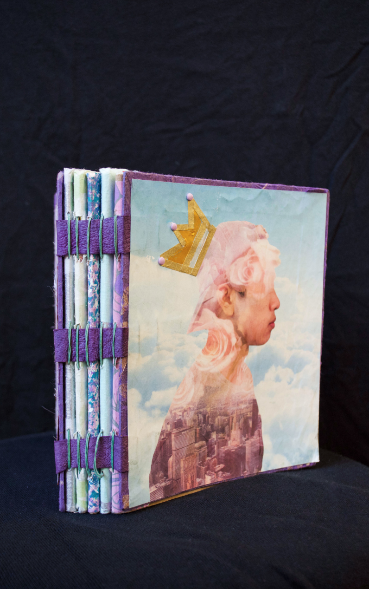

Collecting memories is something I have always done while growing up. Writing in a diary, jotting down quick thoughts, and drawing pictures are just some of the ways I would collect memories. Thus, I wanted to create an artistic rendition and culmination of what I believe is the perfect vessel for my memories. When creating The Collector of Memories, I hand sewed the pages together as well as using book cloth and fabric to bind the book. The cover, a self portrait, was created in Adobe Photoshop by using images I strongly associate with certain memories and edited in Adobe Lightroom.
